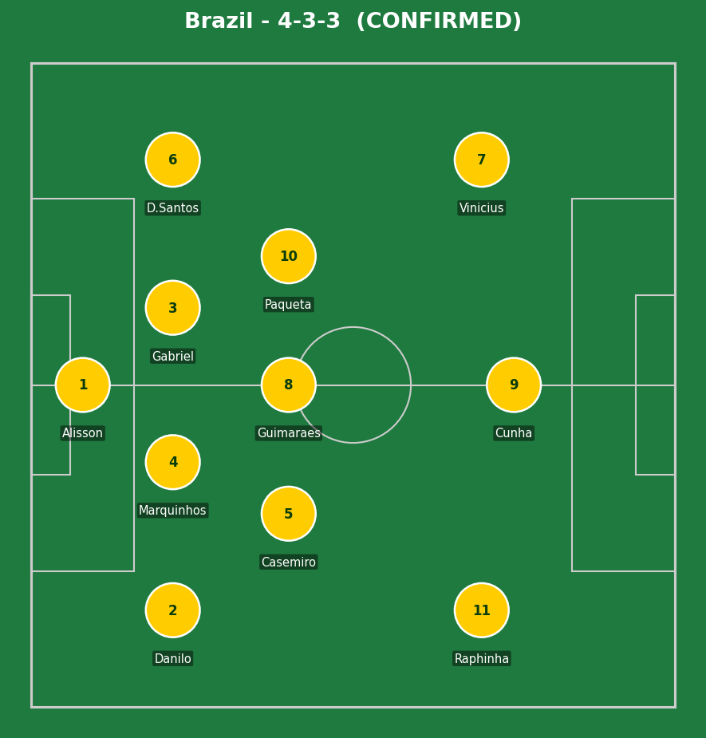
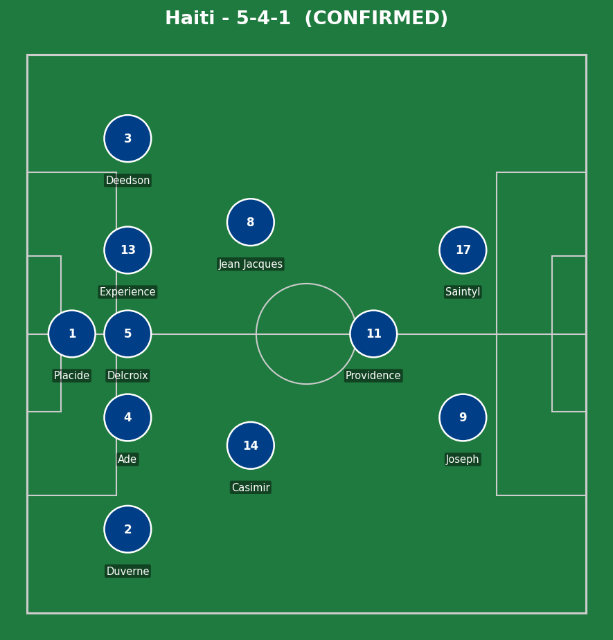
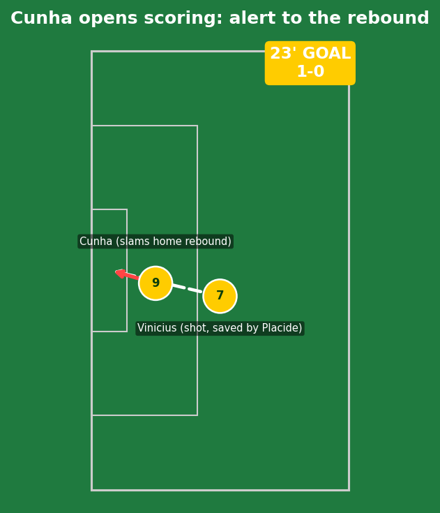
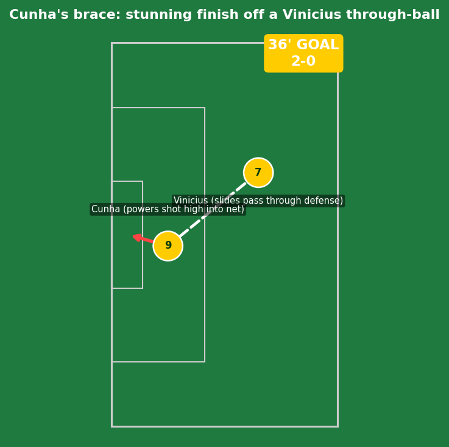
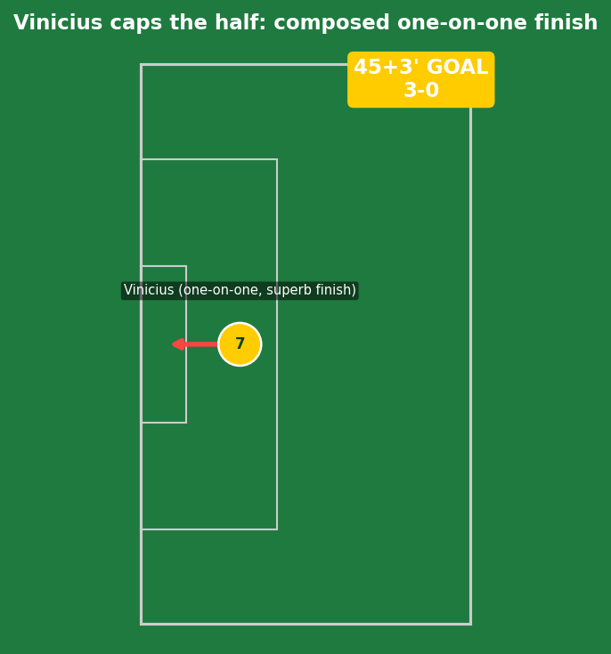
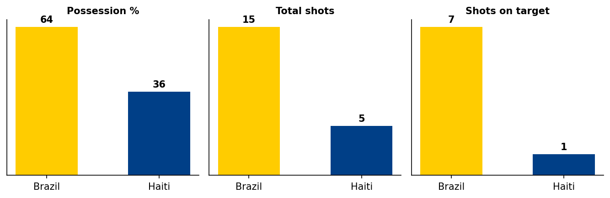
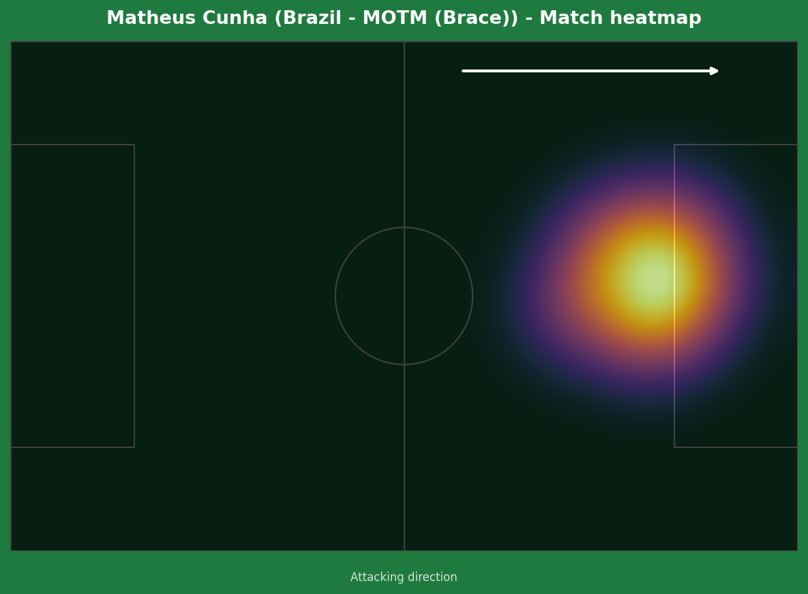
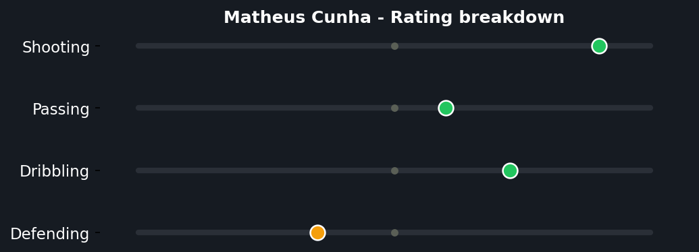
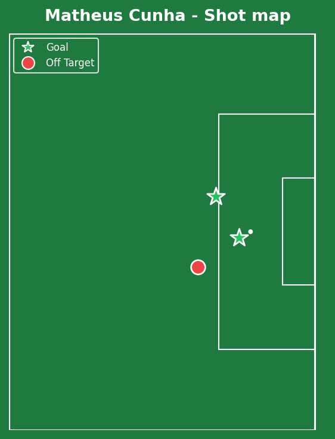

Carlo Ancelotti's decision to start Matheus Cunha after using him only as a late substitute in the Morocco draw was vindicated emphatically - a brace either side of the half-hour mark, with Vinicius Junior adding a third right on the stroke of half-time. Brazil eased off in the second half, but the damage was already done; Haiti's World Cup ends here as the first team mathematically eliminated from advancing.


Brazil (4-3-3): Alisson; Danilo, Marquinhos, Gabriel, D. Santos; Casemiro, Guimaraes, Paqueta; Raphinha, Cunha, Vinicius. Haiti (5-4-1, switched to 4-4-2 second half): Placide; Duverne, Ade, Delcroix, Experience, Deedson; Casimir, Jean Jacques, Providence; Joseph, Saintyl.
Cunha's inclusion changed Brazil's attacking shape noticeably - a more direct, mobile central presence than Igor Thiago offered in the opener, constantly looking to get in behind rather than holding the ball up. Both his goals came from exactly that profile: alert positioning for a rebound, then a well-timed run to receive Vinicius's through-ball.
Haiti's 5-4-1 was a sensible defensive setup against a side of Brazil's quality, and they showed real discipline not to overcommit or panic when chasing the ball. The problem was less structural than simply a gap in individual quality - Alisson's spectacular save to deny Ricardo Ade's header was the closest Haiti came to a real moment, a small consolation in an otherwise comprehensive defeat.
The key tactical moment: Haiti's second-half switch to 4-4-2 combined with Brazil visibly taking their foot off the gas. Neither side had much urgency left once the result was effectively settled before half-time, which is why the scoreline didn't grow further despite Brazil's continued territorial dominance.

Vinicius's initial shot was well-saved by Johnny Placide, but Cunha's alertness to the rebound was the real quality here - already moving toward the most likely spill zone before the save had even happened, and finishing first-time without breaking stride. No Haiti error to point to; simply good Brazilian anticipation.

A genuinely excellent piece of Brazilian football - Vinicius slid a pass through Haiti's defensive line that required real vision to spot, and Cunha's finish, powered high into the net, was struck with real conviction rather than placed tentatively. Two players combining at a level Haiti simply had no defensive answer for.

A composed, clinical finish in a one-on-one situation against the goalkeeper - the kind of chance that's easy to rush or overthink, and Vinicius did neither. Right before half-time too, which meant Haiti had to walk off at the break already facing an effectively insurmountable deficit.

A 15-5 shot count and 7-1 gap in shots on target reflects total Brazilian control - this was as comprehensive as the scoreline suggests, if anything slightly more one-sided than 3-0 implies.



Just his second senior Brazil goal, and first at a World Cup, made instantly twice over - a brace that directly answered Ancelotti's decision to finally start him after using him sparingly in the opener. The shot map shows two clean, central finishes inside the box rather than speculative efforts from distance - an efficient, low-volume, high-conversion night that's exactly the kind of statement performance that cements a starting role for the rest of the tournament.
Illustrative reconstruction based on known event locations, not raw GPS tracking data.
Cunha - 8.5 ⭐ MOTM (brace)
Vinicius - 8.0 (goal, assist)
Paqueta - 6.5 (tidy, no real risk)
Alisson - 6.5 (one big save)
Placide - 6.5 (couldn't be faulted much)
Ade - 6.0 (good header chance)
Delcroix - 5.5 (battled, overrun)
Casimir - 5.5 (limited service)
Next: Brazil face Scotland in Miami, knowing a win secures top spot in Group C. Haiti's tournament effectively ends here, playing out the final group game for pride.